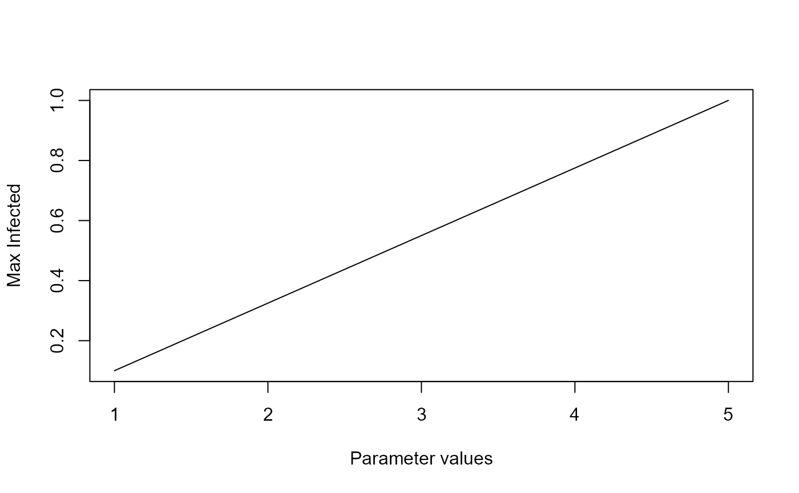

Simulation to illustrate parameter scan of the basic SIR model with births and deaths #'
Source:R/simulate_SIR_modelexploration.R
simulate_SIR_modelexploration.RdThis function simulates the SIRS model ODE for a range of parameters. The function returns a data frame containing the parameter that has been varied and the outcomes (see details).
Usage
simulate_SIR_modelexploration(
S = 1000,
I = 1,
R = 0,
b = 0.002,
g = 1,
w = 0,
n = 0,
m = 0,
tstart = 0,
tfinal = 1000,
dt = 0.1,
samples = 10,
parmin = 5e-04,
parmax = 0.005,
samplepar = "b",
pardist = "lin"
)Arguments
- S
: starting value for Susceptible : numeric
- I
: starting value for Infected : numeric
- R
: starting value for Recovered : numeric
- b
: infection rate : numeric
- g
: recovery rate : numeric
- w
: rate of waning immunity : numeric
- n
: the rate at which new individuals enter the model (are born) : numeric
- m
: the rate of natural death (the inverse is the average lifespan) : numeric
- tstart
: Start time of simulation : numeric
- tfinal
: Final time of simulation : numeric
- dt
: Times for which result is returned : numeric
- samples
: Number of values to run between pmin and pmax : numeric
- parmin
: Lower value for varied parameter : numeric
- parmax
: Upper value for varied parameter : numeric
- samplepar
: Name of parameter to be varied : character
- pardist
: spacing of parameter values, can be either 'lin' or 'log' : character
Value
The function returns the output as a list, list element 'dat' contains the data frame with results of interest. The first column is called xvals and contains the values of the parameter that has been varied as specified by 'samplepar'. The remaining columns contain maximum and final state numbers of susceptible, infected and recovered Smax, Imax, Rmax and Sfinal, Ifinal, Rfinal. A final boolean variable 'steady' is returned for each simulation. It is TRUE if the simulation reached steady state, otherwise FALSE.
Details
This code illustrates how to systematically analyze the impact of a specific parameter. The SIR ODE model with births and deaths is simulated for different parameter values. The user can specify which parameter is sampled, and the simulation returns for each parameter sample the max and final value for the variables. Also returned is the varied parameter and an indicator if steady state was reached.
Notes
The parameter dt only determines for which times the solution is returned, it is not the internal time step. The latter is set automatically by the ODE solver.
Warning
This function does not perform any error checking. So if you try to do something nonsensical (e.g. specify negative parameter values or fractions > 1), the code will likely abort with an error message.
See also
See the shiny app documentation corresponding to this simulator function for more details on this model.
Examples
# To run the simulation with default parameters just call the function:
if (FALSE) res <- simulate_SIR_modelexploration() # \dontrun{}
# To choose parameter values other than the standard one, specify them, like such:
res <- simulate_SIR_modelexploration(tfinal=100, samples=5, samplepar='g', parmin=0.1, parmax=1)
# You should then use the simulation result returned from the function, like this:
plot(res$dat[,"xvals"],res$data[,"Imax"],xlab='Parameter values',ylab='Max Infected',type='l')
